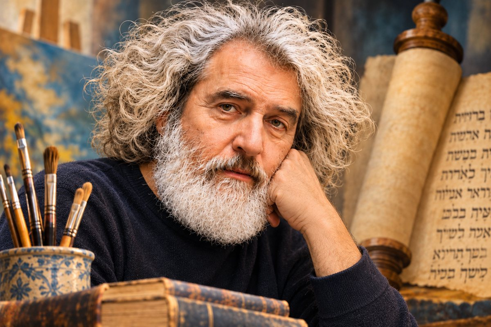

About the Author

Ephraim Kalish is sitting in my living room drinking tea and holding court on his favorite subject - aesthetics through the lens of scripture. Ephraim taught architecture in the former Soviet Union and he carries a professorial demeanor. Even his shaggy mane of hair and full beard bespeaks a man of letters holding forth at the academy. Every comment is neatly divided into points 1, 2, 3; sub-points a, b, c, d. As interviewer I have to gently steer him back on track from expounding in minutia on a host of subjects on which Ephraim could easily lecture for hours. This is a man who thinks deeply.
From Kazan to Haifa
Ephraim and his wife, Ivetta, emigrated from the former Soviet Union to Haifa in 1996. Both had graduated from the same architecture academy in Kazan, central Russia. Ephraim continued on as a lecturer at the academy. Ephraim's mother and father are Jewish but this meant little more than a designation on his I.D. card. Ephraim explained, "My father was and is a communist, we were Jews but raised in a completely secular way. My parents did not want to talk about their Jewish heritage." Only after coming to faith in the Jewish Messiah did Ephraim come to appreciate his Jewish heritage and identity. Soon after coming to faith Ephraim began researching his Jewish roots. As he studied the scriptures he saw clearly that Israel is the place for the Jewish people. As the Holy Spirit continued to lead Ephraim towards his Jewish roots he had an open vision. He saw a map of Israel outlining a coastline with a distinct bay. Ephraim was unsure of Israel's topography but checking an atlas confirmed he had indeed seen the coast of Israel, more specifically he had seen Mt Carmel and Haifa Bay. Ephraim and Ivetta were sure God was leading them to live in Haifa.
Probing Questions
Since early childhood Ephraim had been involved in some sort of artistic endeavor. He studied music in the conservatory and painting and sculpture. As an architect he had focused on design and graphics. Life as an artist often poses difficulties, but for a new immigrant in Israel's competitive scene it is especially hard. Buoyed by their sense of calling, Ephraim and Ivetta struggled through their first years in Israel. Ephraim was forced to ask some deep questions of himself and of his God. He had always been an artist of one sort or another and was at a crossroads of identity and purpose. Ephraim: "As a young believer I was zealous for God and was even willing to give up art for His sake. I wanted to know what God thought about art, not just as an intellectual exercise - it was a practical issue. I didn't know what else I could do. How else would I live?" Ephraim began a serious study of what the Bible says about art and artists. From Ephraim's experience in religious circles, both Jewish and Christian, he saw how religious institutions had denigrated the role of artists in society. But his study of scripture produced a different conclusion. As with every good and perfect gift, art was God's idea in the first place.
A Divine Calling
In Israel, Ephraim's teaching gift and his insights into the biblical perspective on art butted up against the difficulties he had experienced and had seen other artist friends suffer. Through this meeting of circumstances and knowledge Ephraim received his calling to educate, encourage and promote art and artists in Israel: "All these difficulties helped me understand what other artists go through in Israel. Many professional artists and musicians end up as street cleaners. I could feel what others faced who pass through difficulties. I have always been involved in artistic work but my sense is my main calling is to help other artists."
So Ephraim and Ivetta began inviting artists to their home on Jewish feast days to explore what the scriptures say about art and to encourage artists to link their creative ability to the supreme creator. Ephraim would lead in discussions and encourage artists to take on special projects related to the biblical feast days. For example, Ephraim and Ivetta invited three musicians to collaborate on a composition centered on Rosh Hashanah. Each artist would compose a segment based on the three modes of blowing of the shofar as prescribed in the traditional synagogue service.
Art Midrash
These informal collaborations and discussions evolved into a foundational teaching on biblical art. Ephraim has amassed a 25 part lecture series entitled, "Art Midrash." Art Midrash can be explained by focusing on the two components of the title: Art - creativity from God's perspective as revealed in scripture; Midrash - the Jewish method of biblical interpretation. Combining the two focuses the Jewish system of interpretation on the artistic process. Ephraim stressed that the realm of creativity is not just for artists: "Faith is a process of creativity. The Bible defines faith 'as the evidence of things not seen.' Both the artist and the believer are required to make sense of and express what others cannot see."
Ephraim has conducted his Art Midrash lectures in Haifa, Jerusalem and Nazareth. His hope is to engage Jewish artists in their biblical heritage; to welcome them into the community of faith instead of pushing them away, to see them find their rightful place within the congregation. Ephraim warned that when the faith community rejects artists they cut off possibilities of worship and honor to God.
Ephraim has distilled his ideas on the creative process into a new film, "Bezalel, Son of Light." Bezalel, (in the shadow of God), was the craftsman endued with the Holy Spirit in order to design and build the tabernacle and its furnishings. The film explores the template for biblical artistry through the genealogy of Bezalel found in Exodus 31:2: "See, I have called by name Bezalel the son of Uri, the son of Hur, of the tribe of Judah." Through an examination of the meaning of each name in Bezalel's ancestry the film reveals the close association between the work of the artist and the mind of the Creator of all things. Ephraim explores the etymological root of each name and discovers a well of meaning. For example, the Hebrew word for Shadow, (Tsel) is rooted in the name Bezalel. Here is a sample from the film's narration of Ephraim's "Art Midrash" on the name Bezalel:
The qualities of a shadow will tell us a lot about what an artist's character should be, and about his essence. Shadows exist only in the light; they do not exist in the darkness. Shadows exist according to the laws of light. They present an image, a projection of a certain object. But it never copies the details of the original; a shadow only reveals a silhouette, a representation of the original object. There is another feature of a shadow: A Shadow cannot exist independently of the object from which it is cast. It is totally dependent on it and devoted to it. As a shadow follows an object, so a man should follow his Creator.
Interspersed through the film are four musical interpretations of each name in the Bezalel genealogy. A young Israeli composer, Daniel Kruglov wrote and performed each piece. True to Ephraim's vision the film project not only highlights Ephraim's deep understanding of art and scripture but serves as a vehicle to encourage a young artist in his craft. This is the heart of Ephraim Kalish; teacher, collaborator, mentor, artist.
By Martin Shoub